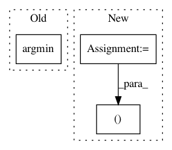

c8102caf93b5ef5faa7effbdd581d83c632c0b83,skvideo/motion/block.py,,_minCost,#Any#,14
Before Change
h, w = costs.shape
if costs[h/2, w/2] == 0:
return np.int((h-1)/2), np.int((w-1)/2), 0
idx = np.unravel_index(np.argmin(costs), costs.shape)
return np.int(idx[0]), np.int(idx[1]), costs[idx]
After Change
if costs[i, j] < mi:
mi = costs[i, j]
dx = j
dy = i
return dx, dy, mi
//def _minCost(costs):
// h, w = costs.shape
In pattern: SUPERPATTERN
Frequency: 3
Non-data size: 3
Instances
Project Name: scikit-video/scikit-video
Commit Name: c8102caf93b5ef5faa7effbdd581d83c632c0b83
Time: 2016-12-05
Author: tgoodall@utexas.edu
File Name: skvideo/motion/block.py
Class Name:
Method Name: _minCost
Project Name: rtavenar/tslearn
Commit Name: 09e840bbfe27f65eb2f46fd988db5685b824e2d0
Time: 2020-05-16
Author: romain.tavenard@univ-rennes2.fr
File Name: tslearn/early_classification.py
Class Name: NonMyopicEarlyClassifier
Method Name: _predict_single_series_proba
Project Name: daavoo/pyntcloud
Commit Name: dcc9281caff5b59b4530deee199b2aa2d2a2dadf
Time: 2017-02-27
Author: daviddelaiglesiacastro@gmail.com
File Name: pyntcloud/sampling/sampling.py
Class Name:
Method Name: voxelgrid_nearest